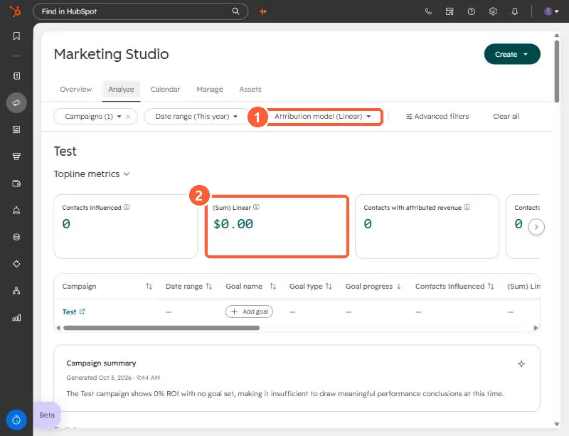

Short answer
HubSpot's attribution documentation lists four conditions: the deal is in a closed won stage, it has at least one associated contact, it has known values for Amount, Create date, and Close date, and the associated contact has recorded interactions to credit. Miss one and the deal contributes nothing. A zero-dollar deal can meet every condition and still add $0 of revenue.
1. Where you see the problem
The usual symptom is a campaign or attribution report whose revenue is lower than you expect. In Marketing Studio, the Analyze tab shows revenue and the attribution model. In Marketing Hub Enterprise you can choose the model, and the screenshot shows the demo campaign on the Linear model with $0.00 and no influenced contacts.


Find campaigns from Campaigns. Then open the deal that should be counted and walk through the four checks.
2. The four checks
- Closed won stage. The deal has to be in a closed won stage, and the pipeline has to have one configured.
- An associated contact. At least one contact must be associated to the deal. Without it, there are no interactions to credit.
- Known property values. Amount, Create date, and Close date must all have values.
- Tracked interactions. The contact needs interactions HubSpot recorded. For calls or meetings to count, they must be linked to both the contact and the deal.
3. Deals people forget about
- Deals with no contact. Created by hand for a company only. Add the contact and the deal can count.
- Deals with a blank close date.
- Zero-dollar deals. I created a zero-dollar closed won deal for a client's points reallocation. It can be valid and still adds $0 to revenue, so do not read $0 as a bug.
- Interactions that are not linked. A call logged on the company only does not help the contact.
These are all fields on the deal and the contact, so the fix is to correct the record, not the report. After you fix it, wait for the report to refresh before judging.